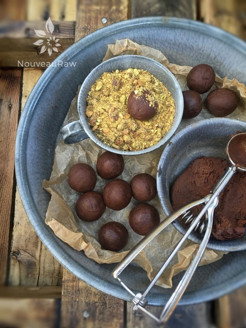
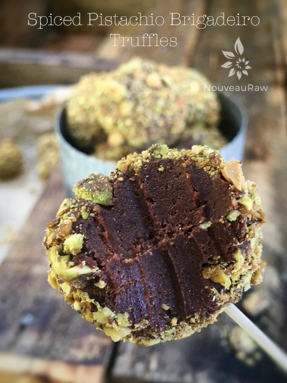

Spiced Pistachio Brigadeiro Truffles

~ raw, vegan, gluten-free ~
The other day I was half watching The Food Network, and I heard the word Brigadeiro. Pronounced, bri-ga-DAY-ro. I am struggling trying to get the word to stick in my vocabulary, so I have to keep repeating it over and over and over.
So what the heck is it?
Google! Thank Google… it is a simple form of a Brazilian chocolate bonbon, created in the 1940s and named after Brigadier Eduardo Gomes, whose shape is reminiscent of some varieties of chocolate truffles. It is a very popular candy in Brazil and Portugal it is usually served at birthday parties, and also as a dessert. Well shoot fire and save matches (as my friend Elaine taught me to say) I can make those! Mr. Google… what is in a Brigadeiro?
It is made by mixing sweetened condensed milk, butter, and cocoa powder together. The mixture is then heated in a pan on the stove or in a microwave oven to obtain a smooth, sticky texture. It is usually rolled into balls which are covered in granulated chocolate; that is the way brigadeiros are served at children’s birthday parties. It can also be consumed basically as a paste in a jar, with a spoon or used as a topping or a filling for cakes, brownies, and other pastries. After creating this recipe, I concur! Delicious!
The crunchy exterior is sweet, spicy, and has that down to earth warm hug as if it were from Mother Nature herself with the combination of the coriander, cumin, cinnamon, and ginger. Oh but then there is the center, the core, the nucleus…. rich, creamy, and slightly sweet. Enough to keep you speechless… for a few seconds anyway, just long enough to mutter… OMG.
Yields 32 truffles
Spice pistachios:
- 3/4 cup pistachios, soaked
- 2 Tbsp maple syrup
- 1 tsp ground coriander
- 1/2 tsp ground cumin
- 1/4 tsp ground Ceylon cinnamon
- 1/4 tsp ground ginger
- 1/4 tsp cayenne
- 1/4 tsp Himalayan pink salt
Brigadeiro Truffles:
- 2 cups packed, Medjool dates, pitted
- 2 1/2 oz cacao butter (1 cup shredded)
- 1/2 cup raw cacao powder
- 2 Tbsp raw agave nectar
- 3 tsp vanilla extract
- 1/8 tsp Himalayan pink salt
Preparation:
Spice pistachios:
- Soak, drain and rinse the pistachios, place in a small bowl.
- Add the maple syrup, coriander, cumin, cinnamon, ginger, cayenne, and salt. Stir until all of the pistachios are coated.
- Spread the nuts out on the teflex sheet that comes with the dehydrator. Dry at 115 degrees(F) for 8-10 hours or until dry.
- Once cooled to room temperature, diced into small bits with a sharp knife. I don’t recommend crushing them in a zip lock bag because it will create more powder and uneven bits.
Brigadeiro Truffles:
- Remove the pits from the dates and inspect each one, making sure that it is free of mold. Place in a medium bowl and pour in enough hot water to cover the dates. Rehydrate for 10-15 minutes. Pour the drain water out and squeeze the excess water out from the dates with your hand. Place in the food processor, fitted with the “S” blade. Puree the dates until they start to change color. See photo below.
- Cacao butter ~ grate the cacao butter, so it melts quickly and evenly. You can melt the cacao butter in two ways:
- Dehydrator ~ place the bowl of cacao butter in the dehydrator and set the temperature at 115 (F). Stir occasionally until melted.
- Hot water bath ~ place the grated cacao butter in a sealed jar. Put the jar in the center of the large bowl and pour hot water into the bowl. The hot water will melt the cacao butter.
- Add the cacao butter, cacao powder, agave, vanilla and salt to the food processor and process until the batter comes together in a paste. Place a medium-sized bowl and chill for 4+ hours. I chilled mine for over 8 hours due to getting busy with other projects.
- Using a cookie scoop, scoop up the batter and level off the scoop rim.
- Roll the batter into a ball in the center of your hand. If the batter is sticky (mine was) coat your hands occasionally with coconut oil. This will prevent the batter from sticking to you and soften your hands in the meantime. :)
- Roll each ball in the chopped Spiced Pistachio mix. I made a second bowl of the pistachios but ground them even finer. The end result, we liked the chunkier version the best… it seemed more flavorful.
- Storage: these truffles can be left on the counter for about 5-7 days. The cacao butter helps them retain their shape, so they won’t melt. Our house temp stays at about 70 degrees so keep that in mind. Fridge – store in airtight container for several weeks, or for 2+ months in the freezer.


© AmieSue.com